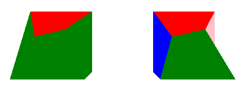
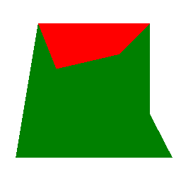
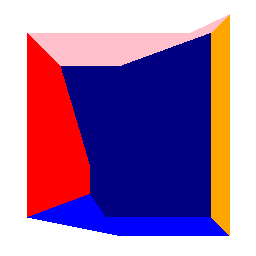

Qt Quick 3D - Sub-mesh Example
Demonstrates how assign materials to sub-meshes.

This example demonstrates how material and sub-meshes are mapped.
Sub-meshes and materials
When a Model is built up of two or more meshes, then those meshes are referred to as sub-meshes. Each sub-mesh can have its own material, but it's not required to provide more then one material per model. If there are more sub-meshes then there are materials, then the last material in the materials list is used for all remeining sub-meshes. When a model is provided with one material per sub-mesh, then those are mapped on-to-one, meaning the first material in the list is applied to the first sub-mesh, the second material to the second sub-mesh, and so forth. How the sub-meshes are ordered in a model depends on how the model was created and exported by the 3D modeling tool used to create it.
The following example shows two distored cubes where each side of the cube is a sub-mesh of its own.
If we look at the cube on the left, we can see that there's one side colored red while the rest of the sides are green, the reason for this is of course that the material only has two materials, namely one red, and one green. In our model the first sub-mesh happens to be the "top" side of the distored cube, and since the red material is the placed first in the material list, it gets a red color as expected. The second material in the list is the green material which is mapped to the second sub-mesh, which is the "fron" side of the distored cube, and since it's the last material in the list, it will also be the material used for all the remaining sides of the distored cube.

DistortedCube { x: -4 scale: Qt.vector3d(2, 2, 2) materials: [ PrincipledMaterial { baseColor: "red" lighting: PrincipledMaterial.NoLighting }, PrincipledMaterial { baseColor: "green" lighting: PrincipledMaterial.NoLighting } ]
Looking at the cube to the right we can see that it has been give some more colors, this is of of course because we now provided one material for each of the six sub-meshes, each with a different color.

Model { source: "qrc:/meshes/distortedcube.mesh" PrincipledMaterial { id: frontTop_material baseColor: "red" cullMode: Material.NoCulling lighting: PrincipledMaterial.NoLighting } PrincipledMaterial { id: frontBottom_material baseColor: "green" cullMode: Material.NoCulling lighting: PrincipledMaterial.NoLighting } PrincipledMaterial { id: leftSide_material baseColor: "blue" cullMode: Material.NoCulling lighting: PrincipledMaterial.NoLighting } PrincipledMaterial { id: rightSide_material baseColor: "pink" cullMode: Material.NoCulling lighting: PrincipledMaterial.NoLighting } PrincipledMaterial { id: backSide_material baseColor: "orange" cullMode: Material.NoCulling lighting: PrincipledMaterial.NoLighting } PrincipledMaterial { id: bottomSide_material baseColor: "navy" cullMode: Material.NoCulling lighting: PrincipledMaterial.NoLighting } materials: [ frontTop_material, frontBottom_material, leftSide_material, backSide_material, rightSide_material, bottomSide_material ] }
Files:
- submeshes/CMakeLists.txt
- submeshes/Example/qml/DistortedCube.qml
- submeshes/Example/qml/main.qml
- submeshes/Example/qmldir
- submeshes/Example/submeshes_qml_module_dir_map.qrc
- submeshes/main.cpp
- submeshes/meshes.qrc
- submeshes/qml.qrc
- submeshes/qml/DistortedCube.qml
- submeshes/qml/main.qml
- submeshes/submeshes.pro